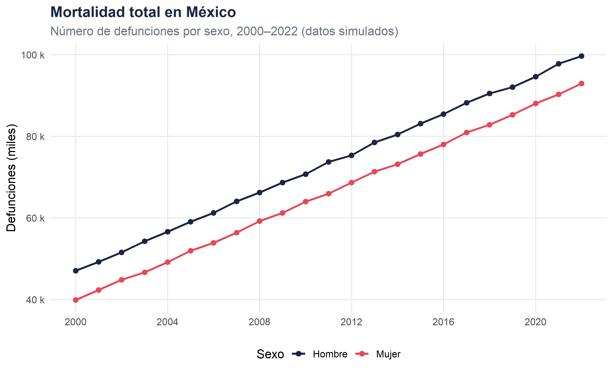

Una aproximación multidimensional : temporalidad, causas y territorio
Fecha de publicación
abril 2026
Mortalidad en México
Este sitio presenta un análisis sistemático y progresivo de la mortalidad en México a partir de registros administrativos (INEGI / Secretaría de Salud). La arquitectura analítica se organiza en dos bloques complementarios :
🏥 Bloque A — Análisis epidemiologico
Progresión por desagregación de variables : tendencias globales → causas → estados → municipios.
🗺️ Bloque B — Análisis espacial
Cartografía multi-escala : distribución por estados, hotspots municipales, gradientes regionales.
# Agrégation nationalemort_nacional<-mort|>group_by(year, sex)|>summarise(deaths =sum(deaths), .groups ="drop")ggplot(mort_nacional, aes(x =year, y =deaths/1000, color =sex, group =sex))+geom_line(linewidth =1.1)+geom_point(size =2.2)+scale_color_manual(values =palette_sexo)+scale_x_continuous(breaks =seq(2000, 2022, 4))+scale_y_continuous(labels =label_comma(suffix =" k"))+labs( title ="Mortalidad total en México", subtitle ="Número de defunciones por sexo, 2000–2022 (datos simulados)", x =NULL, y ="Defunciones (miles)", color ="Sexo")+theme_minimal(base_size =13)+theme( plot.title =element_text(face ="bold", color ="#1a2744"), plot.subtitle =element_text(color ="#6c757d"), legend.position ="bottom", panel.grid.minor =element_blank())

Evolución de la mortalidad total por sexo (2000–2022)
Nota
Nota sobre los datos
Los valores presentados en este sitio son simulados con fines demostrativos. Pour l’analyse réelle, remplacez le chunk setup-global par : mort <- read_csv("data/mortalidad_mexico.csv"). Les sources recommandées sont INEGI (SINAIS) et la DGE de la SSA.
Cómo navegar este sitio
Existen dos modalidades de lectura :
Lectura progresiva — seguir el Bloque A del nivel ① al ⑤, aumentando gradualmente la complejidad analítica.
Lectura temática — ir directamente al Bloque B para la perspectiva espacial, o saltar a cualquier nivel según la pregunta de investigación.
Los enlaces → página siguiente al final de cada página permiten avanzar de forma guiada.
---title: "Análisis de la Mortalidad en México"subtitle: "Una aproximación multidimensional : temporalidad, causas y territorio"date: todaydate-format: "MMMM YYYY"author: ""lang: esinclude-in-header: text: | <link rel="preconnect" href="https://fonts.googleapis.com"> <link href="https://fonts.googleapis.com/css2?family=Playfair+Display:wght@400;700&family=Source+Sans+3:wght@300;400;600&family=JetBrains+Mono&display=swap" rel="stylesheet">format: html: toc: true page-layout: full---```{r setup-global, include=FALSE, cache=FALSE}# ── Packages globaux ─────────────────────────────────────────────────# Ce chunk est exécuté une fois et ses objets sont disponibles# si cache=TRUE est activé dans _quarto.yml# install.packages("tmap")library(tidyverse)library(scales)library(knitr)library(kableExtra)library(tmap)# ── Palette cohérente sur tout le site ──────────────────────────────palette_sexo <-c("Hombre"="#1a2744", "Mujer"="#e84855","Total"="#2a7a8c")palette_causa <-c("Enfermedades cardiovasculares"="#1a2744","Tumores malignos"="#e84855","Diabetes mellitus"="#2a7a8c","Enfermedades respiratorias"="#f4a261","Causas externas"="#6c757d","Otras"="#adb5bd")# ── Données simulées (à remplacer par vos fichiers réels) ────────────# Remplacez par : mort <- read_csv("data/mortalidad_mexico.csv")set.seed(42)years <-2000:2022mort <-expand.grid(year = years,sex =c("Hombre", "Mujer"),state =c("Ciudad de México", "Jalisco", "Nuevo León","Veracruz", "Chiapas", "Oaxaca","Guanajuato", "Michoacán", "Puebla", "Sonora"),cause =c("Enfermedades cardiovasculares", "Tumores malignos","Diabetes mellitus", "Enfermedades respiratorias","Causas externas", "Otras")) |>mutate(deaths =rpois(n(), lambda =500+40* (year -2000) +ifelse(sex =="Hombre", 120, 0) +case_when( cause =="Diabetes mellitus"~200, cause =="Enfermedades cardiovasculares"~300, cause =="Tumores malignos"~150,TRUE~50 ) +case_when( state =="Ciudad de México"~400, state =="Chiapas"~-100,TRUE~0 )),rate = deaths /runif(n(), 100000, 2000000) *100000 )# Sauvegarder pour réutilisation inter-pages (via params ou readRDS)# saveRDS(mort, "data/mort_simulated.rds")```<!-- ── Hero banner ──────────────────────────────────────────────── -->::: {.column-screen style="background: linear-gradient(135deg, #1a2744 0%, #2a7a8c 100%); padding: 4rem 2rem; margin-bottom: 2.5rem; color: white;"}::: {.column-body}## Mortalidad en México {style="color:white; border-bottom: 2px solid rgba(255,255,255,0.3);"}Este sitio presenta un análisis sistemático y progresivo de la mortalidad en Méxicoa partir de registros administrativos (INEGI / Secretaría de Salud).La arquitectura analítica se organiza en **dos bloques complementarios** ::::{style="display:flex; gap:2rem; margin-top:1.5rem; flex-wrap:wrap;"}:::{style="flex:1; min-width:260px; background:rgba(255,255,255,0.1); border-radius:8px; padding:1.2rem;"}**🏥 Bloque A — Análisis epidemiologico** Progresión por desagregación de variables :tendencias globales → causas → estados → municipios.::::::{style="flex:1; min-width:260px; background:rgba(255,255,255,0.1); border-radius:8px; padding:1.2rem;"}**🗺️ Bloque B — Análisis espacial** Cartografía multi-escala : distribución por estados,hotspots municipales, gradientes regionales.::::::::::::<!-- ── Carte de navigation rapide ──────────────────────────────── -->## Estructura del sitio### <span class="badge-nivel">Bloque A</span> Análisis Sanitario y Temporal| Nivel | Variables principales | Objetivo analítico | Página ||:---:|:---|:---|:---:|| ① |`year`, `sex`| Tendencias globales |[→](A1_descriptivo_general.qmd)|| ② |`year`, `sex`, `cause`| Transiciones epidemiológicas |[→](A2_causas.qmd)|| ③ |`year`, `sex`, `cause_specific`| Refinamiento por causa específica |[→](A3_causas_especificas.qmd)|| ④ |`year`, `sex`, `state`, `cause`| Disparidades regionales |[→](A4_territorial.qmd)|| ⑤ |`year`, `sex`, `state`, `cause_specific`| Articulación salud-territorio |[→](A5_maxima_desagregacion.qmd)|### <span class="badge-nivel" style="background:#2a9d6e;">Bloque B</span> Análisis Espacial| Nivel | Variables principales | Objetivo analítico | Página ||:---:|:---|:---|:---:|| ② bis |`state`, `year`, `cause`| Distribución espacial, clusters |[→](B2_espacial_estados.qmd)|| ③ bis |`municipality`, `year`, `cause`| Heterogeneidad intra-estatal |[→](B3_espacial_municipios.qmd)|---## Síntesis preliminar```{r resumen-nacional, fig.cap="Evolución de la mortalidad total por sexo (2000–2022)"}# Agrégation nationalemort_nacional <- mort |>group_by(year, sex) |>summarise(deaths =sum(deaths), .groups ="drop")ggplot(mort_nacional, aes(x = year, y = deaths /1000,color = sex, group = sex)) +geom_line(linewidth =1.1) +geom_point(size =2.2) +scale_color_manual(values = palette_sexo) +scale_x_continuous(breaks =seq(2000, 2022, 4)) +scale_y_continuous(labels =label_comma(suffix =" k")) +labs(title ="Mortalidad total en México",subtitle ="Número de defunciones por sexo, 2000–2022 (datos simulados)",x =NULL, y ="Defunciones (miles)", color ="Sexo" ) +theme_minimal(base_size =13) +theme(plot.title =element_text(face ="bold", color ="#1a2744"),plot.subtitle =element_text(color ="#6c757d"),legend.position ="bottom",panel.grid.minor =element_blank() )```::: {.callout-note}**Nota sobre los datos** Los valores presentados en este sitio son **simulados** con fines demostrativos.Pour l'analyse réelle, remplacez le chunk `setup-global` par :`mort <- read_csv("data/mortalidad_mexico.csv")`.Les sources recommandées sont INEGI (SINAIS) et la DGE de la SSA.:::---## Cómo navegar este sitioExisten dos modalidades de lectura :1. **Lectura progresiva** — seguir el Bloque A del nivel ① al ⑤, aumentando gradualmente la complejidad analítica.2. **Lectura temática** — ir directamente al Bloque B para la perspectiva espacial, o saltar a cualquier nivel según la pregunta de investigación.Los enlaces **→ página siguiente** al final de cada página permiten avanzarde forma guiada.